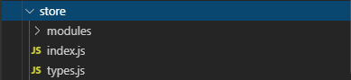

import Vue from 'vue' // 导入vue
import Vuex from 'vuex' // 导入vuex
import user from './modules/user' // 导入user模块
import home from './modules/home' // 导入home模块
Vue.use(Vuex) // 使用vuex组件
const store = new Vuex.Store({ // 实例化组件，传入配置
modules: { // 模块的声明与使用
user,
home
}
})
export default store // 导出为公共模块供其他js文件引入使用
方法名配参数化，方便统一修改维护
// user的方法参数定义
export const SET_USER = 'SET_USER'
export const REMOVE_USER = 'REMOVE_USER'
// token的方法参数定义
export const SET_TOKEN = 'SET_TOKEN'
export const REMOVE_TOKEN = 'REMOVE_TOKEN'
import * as types from '../types' // 导入方法变量
const state = { // 数据池，存放我们需要维护的全局变量
token: null, // 用户token，请求的时候会带上
userInfo: null // 用户信息
}
const mutations = { // 同步操作更改state里面的值
// 设置token
[types.SET_TOKEN] (state, token) { // types.js --> export const SET_TOKEN = 'SET_TOKEN'
state.token = token
},
// 移除token
[types.REMOVE_TOKEN] (state) {
state.token = null
},
// 设置user
[types.SET_USER] (state, user) {
if (!user) return
const { ...userInfo } = user // 从userz中解构出userInfo
state.userInfo = userInfo // state赋值
},
// 移除user
[types.REMOVE_USER] (state) {
state.userInfo = null
}
}
// 异步，调用mutation触发state修改
const actions = { // 异步操作通过调用mutations操作state,中间可以添加自己的函数处理逻辑
// 方法与mutation一一对应
// 设置 token
setToken ({ commit }, token) {
commit(types.SET_TOKEN, token) // 触发mutation里面名字为 type.SET_TOKEN 对应的函数方法，参数为token
},
// 移除token
removeToken ({ commit }) {
commit(types.REMOVE_TOKEN)
},
// 设置用户
setUser ({ commit }, user) {
commit(types.SET_USER, user)
},
// 移除用户
removeUser ({ commit }) {
commit(types.REMOVE_USER)
}
}
const getters = { // state中的属性变量的计算属性，比如可以直接返回或者处理后返回
userInfo: state => state.userInfo // 一般原样返回
// userInfo: state => state.userInfo + 'hello world' // 自己处理数据
}
export default { // 导出模块对象的属性
state,
actions,
mutations,
getters
}
如何拿state值：
如果不需要别的计算逻辑，使用state里面的原始值就能满足需要，一般 this.$store.state.xxx, 这段代码一般放在计算属性里面使用
如果需要对数据进行一些处理
可以通过state里面的getters来预处理数据，下面直接使用
1.从vuex中解构mapGetters导入
import { mapGetters } from 'vuex'
直接在计算属性映射，对应的全局变量，最后通过this.xxx引用
computed: {
...mapGetters(['userInfo']) // 多个变量通过数组里面添加就行
},